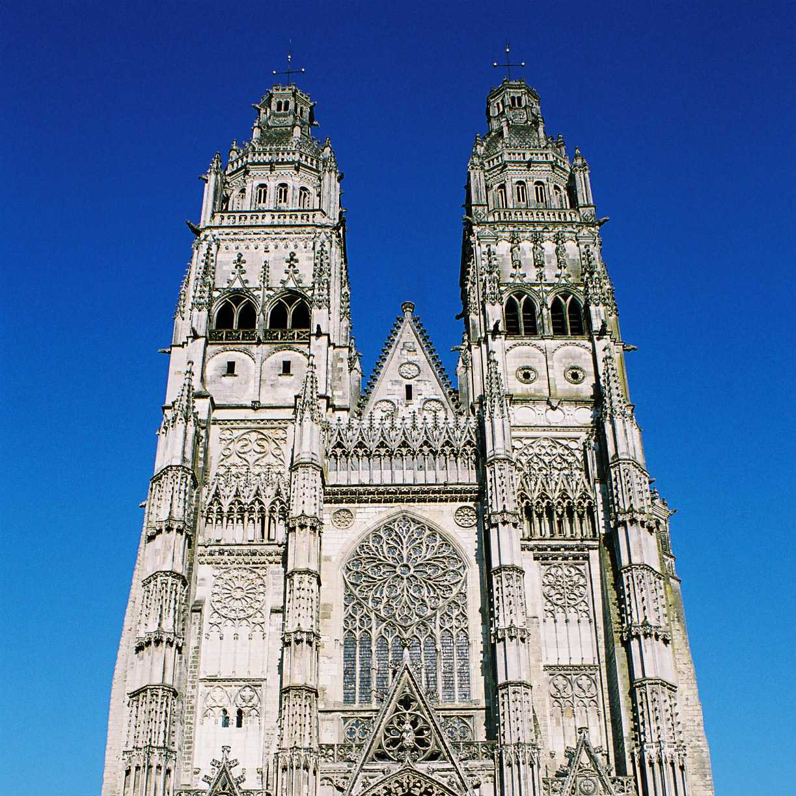
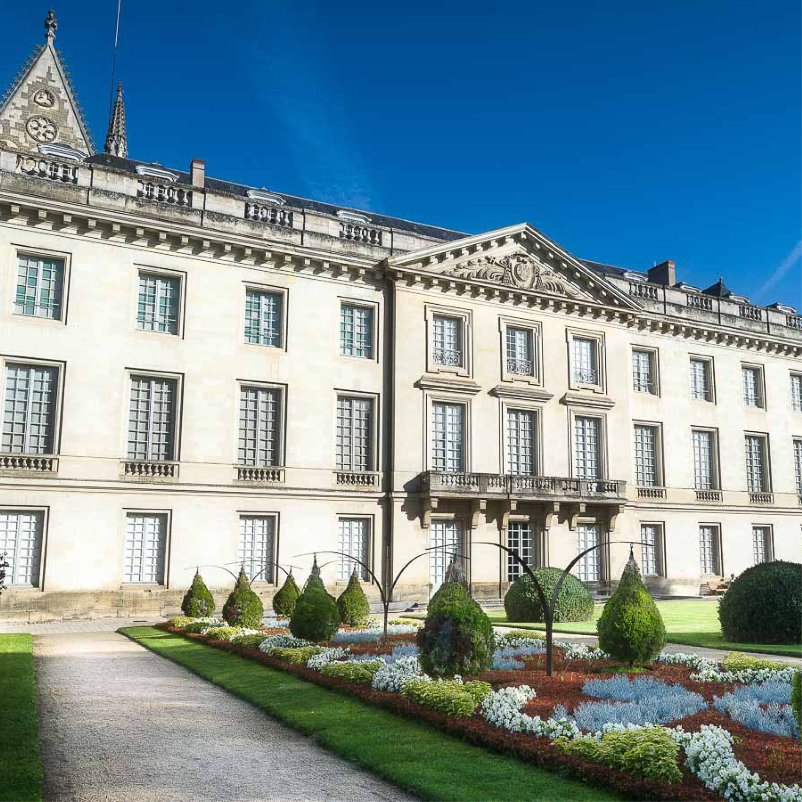

La basilique Saint-Martin

La basilique Saint-Martin de Tours est un édifice religieux situé à Tours dans le Vieux-Tours, dont la crypte abrite le tombeau de Martin de Tours.
L'ancienne église collégiale Saint-Martin de Tours, qui datait essentiellement du xie siècle, fut désaffectée,
C'est un bâtiment en calcaire, granite et marbre, couvert d'ardoises.
Une statue monumentale de saint Martin, en bronzenote 1, destinée à orner le dôme, fut commandée au sculpteur Jean-Baptiste Hugues (prix de Rome en 1875). Victor Thiébaut, fondeur, la livra en 1889.
L'édifice a été consacré comme basilique le 4 juillet 1925.
voir plus...
La cathédrale Saint-Gatien

La cathédrale Saint-Gatien de Tours est une cathédrale catholique romaine, située à Tours dans le Vieux-Tours, en Indre-et-Loire.
Dédiée à saint Gatien, le premier évêque de Tours, elle est le siège de l'archidiocèse de Tours
et la cathédrale métropolitaine de la province ecclésiastique de Tours.
La cathédrale Saint-Gatien a été construite entre 1170 et 1547.
Elle fait l’objet d’un classement au titre des monuments historiques par la liste de 18621.
voir plus...
Le musée des Beaux-arts

Le musée des Beaux-Arts de Tours est installé dans l'ancien palais épiscopal de la ville, proche de la cathédrale dans le Vieux-Tours.
Un jardin à la française s'étend devant le palais épiscopal du xviiie siècle, qui a gardé une partie de son décor d'origine.
Un cèdre du Liban, classé Arbre Remarquable de France, orne la cour du musée et on peut voir dans cette même cour, dans un bâtiment en face du palais, Fritz,
un éléphant d'Asie empaillé, abattu car devenu incontrôlable lors d'une parade du cirque Barnum & Bailey dans les rues de Tours le 10 juin 1902.
L'accès à l'éléphant et au grand cèdre sont gratuits puisqu'à l'intérieur du parc.
voir plus...
Le château de Tours
Le château de Tours, en Indre-et-Loire, est situé en bordure de Loire dans le quartier le plus ancien de Tours, proche de la cathédrale Saint Gatien, érigé sur les vestiges de la cité antique dont Tours tire son origine.
Nonobstant l'étendue de ses fondations partiellement révélées par les fouilles des années 1970, il est la trace fort modeste d'un château médiéval comtal du xie siècle,
tel qu'il fut modifié et agrandi aux xiiie et xve siècles où il acquiert le statut de demeure royale.
Presque entièrement détruit au xviiie siècle, ses deux tours restantes sont accommodées avec un nouveau bâtiment utilisé par l'armée à partir de la Révolution.
voir plus...